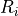
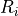

CellMap#
This pipeline implements the cell detection and analysis done in [Renier2016]. It highly optimized to perform a fast and efficient detection of cell nuclei in TB scale light sheet microscopy images.
See the CellMap tutorial for usage.
The main image processing steps are defined in the cell expert module
/../ClearMap.ImageProcessing.Experts.Cells.
Pipeline#
In short background subtraction via morphological opening is followed by a sequence of filters, morphological operations and a 3D peak detection. The peaks are used as seeds for a watershed on the foreground and the resulting shapes filtered by volume to retain only genuine cells.

Figure 14 iDISCO+ and ClearMap: A Pipeline for Cell Detection, Registration, and Mapping in Intact Samples Using Light Sheet Microscopy.#
Illumination correction#
To improve the consistency of the cell detection algorithm, we pre-process the light sheet images by correcting illumination along the y axis (orthogonal to the direction of illumination) to account for light loss due to the objective lens vignetting and Gaussian shape of the light sheet beam.
Because of the Gaussian shape of the light sheet and of the objecting lens vignetting, the sample illumination is not uniform. While correcting the illumination can improve the uniformity of the cell detection, it is often not necessary if all samples where imaged the same way, as the anatomical features will be positioned in the same region of the lens across samples.
Note
Please note that you need to generate an intensity profile for your system if you wish to use this function.
Figure 15 Illumination correction in ClearMap.#
Background removal#
This is the most important pre-processing step, usually always turned on. The background subtraction is done by subtracting a morphological opening and is not very sensitive to the size parameter used, as long as it is in the range of the size of the objects detected.
Equalization#
In this step a custom designed equalization filter is applied optionally.
The filter calculates for each voxel  a lower and upper
intensity (
a lower and upper
intensity ( and
and  )
via a lower and upper percentile (
)
via a lower and upper percentile ( and
and  ) of
the voxel intensities in a rectangular region  centered
around . The region is chosen to be larger than the large
vessel structures and our efficient histogram sampling framework is used
to speed up computation. The voxel intensity is then normalized via
) of
the voxel intensities in a rectangular region  centered
around . The region is chosen to be larger than the large
vessel structures and our efficient histogram sampling framework is used
to speed up computation. The voxel intensity is then normalized via
with normalization factor

and a maximal intensity value for the upper percentile.
Difference of Gaussians (DoG) filter#
This is an optional filter improves the contrast of blob like objects. This filter has a “Mexican Hat” shape that negatively weighs the intensity at the border of the objects.
A c-Fos nuclear staining often has enough contrast and a simple shape so this additional filtering is not necessary usually, but it can help to increase the contrast of the relevant objects for other experiments.
Maxima detection#
In this step potential cell centers are detect by finding local maxima in the pre-processed images.
The maxima detection can have an optional extended maxima filter (via an h-transform) useful for objects that contain several peaks of intensity, for instance, higher resolution views of a cell nuclei with granular texture.
Cell shape detection#
The cell shape detection can be used to measure the volumes of the detected cells. This can help to remove local peaks that do not correspond to an actual cell.
The shape detection is done by a watershed, which will paint the volume of the cell from the detected center outwards.
Cell intensity measurements#
This part of the pipeline allows to measure various expression levels and intensities given the cell centers or shape. Different methods can be used to calculate the intensity in an extended cell shape (e..g max, min, mean etc.).
Statistics#
Cell counts or intensities of each sample in considered regions or annotated brain areas between different groups can be compared using the independent two sample student t-test assuming unequal variances.
ClearMap as a discovery tool also provides correction for p-values for multiple comparison to q-values to control for false-discovery rate.
See the ClearMap.Analysis.Statistics module for more details.